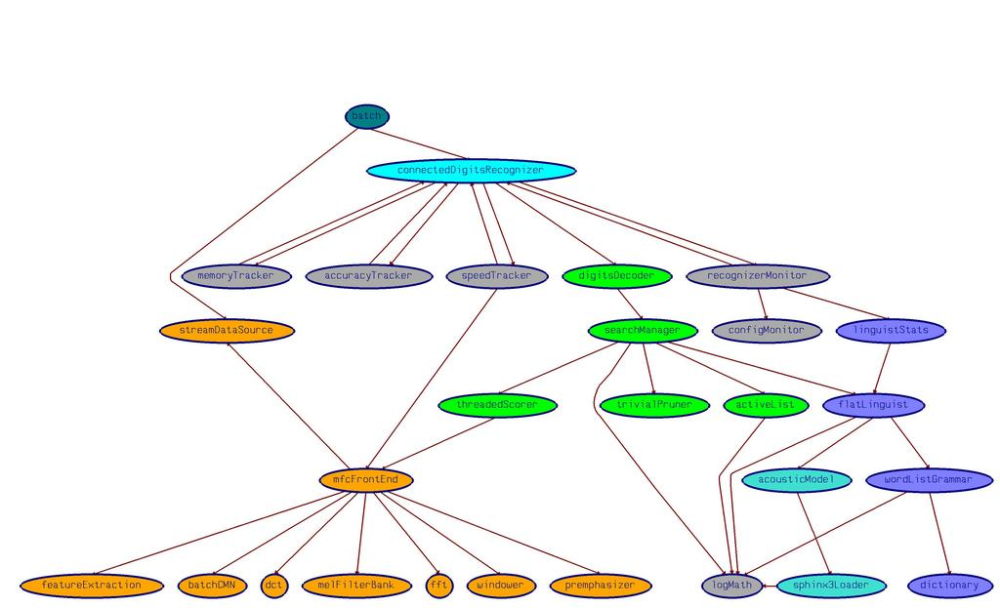
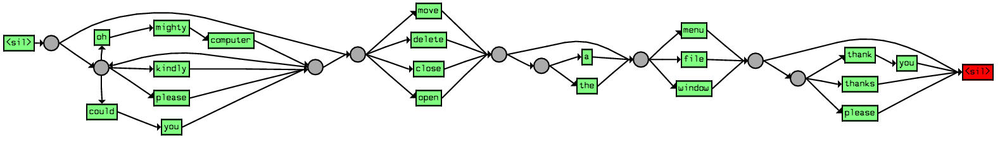
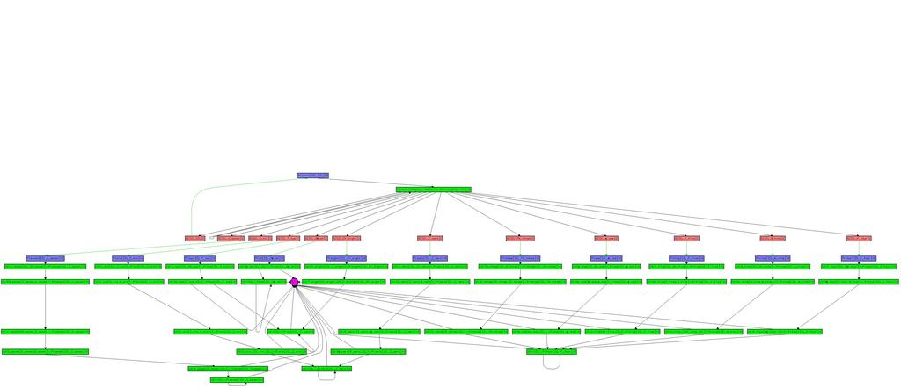
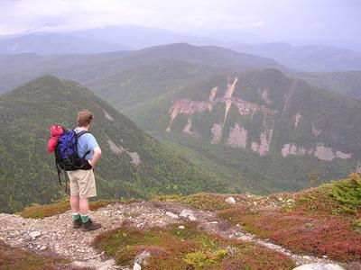

For the last few years I've been coaching a First Lego League team. In First Lego League, a team of 8 to 10 middle-schoolers build and program a robot using Lego Mindstorms and, with the robot, compete against other teams to achieve a set of goals.
This coming fall the competition kicks off with the theme of No Limits. The challenge is to build and program a robot that addresses the specific needs of people who face physical challenges in today's society. .
Given that Dean Kamen, the founder of the First Lego League, is also the inventor of the wheelchair that climbs stairs I'm guessing that we'll be getting acquainted with Lego stair climbing technologies. It will be fun.
Yesterday, the J2ME Executive Committee voted to approve the Community Review Draft of JSR-113 - the next generation of the Java Speech API. SuperDuper! There are still some issues that need to be dealt with. The three Nay votes were all due to concern over the API size. Yep, speech is big. Anyway, there are lots of good comments for the expert group to disect over the next month. We've got our worked cut out for us to get to the next stage.
If you are interested in speech technologies and you are lucky
enough to be attending JavaOne, then you will want to check out Dynamic VoiceXML and CCXML Applications in Java(TM) Technology. This BOF will show how JSPs and servlets can be used to dynamically generate VoiceXML and CCXML applications.
I've always appreciated Sun's logo with its four interleaved copies of the word Sun. According to the WikiPedia
Sun's logo, was designed by professor Vaughan Pratt, of Stanford
University. The initial version of the logo was shown with its sides
oriented horizontally and vertically, but it was subsequently altered to
feature the logo appearing to stand on one corner.
The logo is an example of an Ambigram,
a calligraphic design that manages to squeeze two different readings
into the selfsame set of curves. I first encountered Ambigrams in the
writings of Douglas Hoffstadter. I eventually found the definitive work
of Ambigrams called Inversions by Scott Kim. Mr. Kim is a master of this art form. He maintains an online gallery of some of his work. It is worth checking out.
The ambigram is to writing as the fugue is to music.
For Father's day we took a hike up Mount Monadnock.
It was a clear, cool and breezy day, perfect for hiking. We took the
Birchtoft trail, a less popular trail to avoid the hoards. Lots of folks
at the summit, but only a few seen on the trail on the way. A great day!
My colleague, Phil, has written an excellent description of how to use the Sphinx-4 speech recognizer in a Java program. It is really quite easy to add speech recogntion to a Java program. Check it out in the Sphinx-4 Application Programmer's Guide.
The review period for the first community draft of JSAPI 2.0 (The Java Speech API) closes on June 21. If you are a member of the JCP and have an interest in the next generation of the Java Speech API be sure to send your comments to the JSR-113 expert group by Monday.
Last night while driving my daughters home from dance rehearsal in the
rain, listening to Zeppelin's 'You Shook me', daughter #1 suggests that
the windshield wipers should be moving in time to the music. I say, "Why
Not?". There are Beat Detectors
that can extract the beat from an MP3 file. It is a simple matter of
extracting the beat and feeding it to the computer that drives the
wipers.
During a hard rain, you'd put on a fast song like 'whole lotta love',
and during a gentle mist, a slow bluesey number like 'since i've been
loving you' will do the trick. Ahhh... synchronicity. Sure it may take a
little extra CPU processing to extract the beats but nowadays people
seem to have Plenty of CPU power in their cars.
In Neal Stephensen's 'In the Beginning
... Was the Command Line', Neal argues that the command-line interface
"opens a much more direct and explicit channel from user to machine
than the GUI". I agree, for most tasks, I find that a 'bash' shell,
a text editor, and the suite of Unix commands is the most efficient set
of tools. But ... don't try to write a command shell in Java!
In Java, it is not possible to perform raw console I/O, only line
buffered I/O is possible. The user has to hit [return] before your app
sees what the user typed. This means that interactive command-line
editing, password input (where the characters typed are not echoed) or curses style apps are not possible in Java. Without this capability it is impossible
to write good interactive text apps. You could not write bash
in Java, you could not write a non-GUI vi or emacs.
Bug
4050435 "Improved interactive console I/O (password prompting, line editing)" is number 11 on the list of Top RFEs
at the
Java Bug Parade. This RFE is to provide an API to give Java the ability
to
put the console in raw mode, to allow for character by character input
and output to the terminal. It seems like simple, almost trivial
functionality to add to the Java platform, and it would allow the
writing of a whole class of applications. However,
given that the RFE has been outstanding for Seven Years, it is
unlikely that we'll be seeing a Java command line in the near future.
But you can help. This RFE only needs about 25 more votes to move it
into the top 10 RFEs. If you think Java console apps are important, add
your vote to have this RFE fixed. Seven years is a long time to wait
for such an important thing.
Another shot fired in the "Java vs. C++" war is the The Java is Faster than C++ and C++ Sucks Unbiased Benchmark.
Right away, you can tell that this is an unbiased benchmark (because
it says so right in the title!). Anyway, this page compares the
performance of C++ vs. Java for a number of benchmarks (taken from the
now retired Great Computer Language Shootout). Java does well when compared to C++ in these tests.
I've been around the block enough times to be a bit leary of any performance claims (remember Apple's "fastest PC), nevertheless, there's enough info (including code) on the page to allow anyone to reproduce the numbers.
At the bottom of the benchmark page is a set of links to a few
other sets of Java vs. C or C++ comparisions including a reference to FreeTTS - A Performance Case Study,
a paper written by our speech team here in Sun Labs. This paper
describes the performance issues we encountered when developing FreeTTS.
I think it is a pretty good representation of the issues involved in
developing a high-performance Java application along with a comparision
between a Java and a native-C version of the same application. This
paper describes how we ported a native-C synthesizer (Flite) to Java
(FreeTTS) and how were able to get better performance from our engine.
Looks like Gonzo is not satisfied with just having a talking JXTA client, but one that
listens as well. His first forays into Sphinx-4 bumped into the usual issues with Linux
and Microphones, but he seems to have worked through it and is ready to start digging in.
It will be interesting to see how far he gets before JavaOne. Given that he was sending
me emails at 2:30AM his time this morning working through the microphone issues, he seems
well motivated... something worth keeping an eye on.
In developing Sphinx-4 (our speech recognizer written in the Java
programming language), we often are dealing with large graphs that define the
search space. When debugging the system, we often will want to visualize these
large graphs to ensure that they are constructed properly.
To do this we use a program called aiSee.
AiSee is a software package for laying out and displaying graphs. AiSee has
a number of algorithms for laying out different styles of graphs. There
are a number of examples on their Gallery page.
We've instrumented Sphinx-4 to dump out upon request GDL for the important data
structures. With this we can explore our large data structures using aiSee.
Here are some examples.
Component Hierarchy
This plot shows the various high level components in a typical Sphinx-4
configuration and how the components relate to each other:

JSGF Grammar Graph
This is a word graph that represents the simple JSGF Grammar:
public <basicCmd> = <startPolite> <command> <endPolite>;
<command> =

Search Graph
Here's an example of a very small (isolated digits) search graph:

AiSee is not open source, but it is available for free for non-commercial use.
It is an essential part of our toolkit for developing Sphinx-4.
Yesterday was my birthday, so I decided to take a vacation day and
take a hike in the wonderful White Mountains of New Hampshire. It was
supposed to be the hottest day of the year thus far (95 degrees and very
humid), but instead it was very comfortable 70 degree day, it was a
super day.
Marc (my constant hiking companion) and I took the signal ridge trail up Mount Carrigain on the south eastern corner of the Pemmigewasset Wilderness.

It was an eight hour hike, 10 miles distance and 3500 feet in elevation.
Not too bad for a 45 year old. Of course, since this IS the White
Mountains it had to rain sometime. For this hike it was for the last
hour. I was soaked by the time I finished, but I had a towel and a
change of clothes waiting for me at the car. All in all, a great day.
(That's me in the picture from Signal Ridge on the way to the top).
(This is an archive of most of Paul Lamere's weblog from blogs.sun.com/plamere/
This is not the original. Some links do not work.
An entry index is available.)
I am a researcher in Sun Labs where I explore new ways to organize, search for, and discover music. Read more on the Search Inside the Music project page .